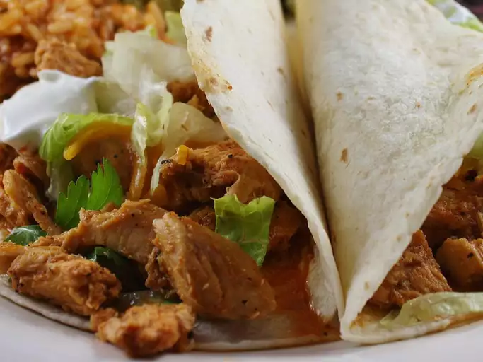

Tacos

Chicken Taco Filling
This recipe is easy, yet delicious when used in tacos or other Mexican cuisine. Try it for enchiladas and nachos too.
Ingredients
- 1 (1.25 ounce) package dry taco seasoning mix
- 1 cup chicken broth
- 1 pound skinless, boneless chicken breasts
Steps
- Mix chicken broth and taco seasoning in a bowl.
- Place chicken breasts in a slow cooker and pour chicken broth mixture over chicken
- Cover and cook on Low for 6 to 8 hours.
- Shred chicken to serve.